Building a CNN Classifier
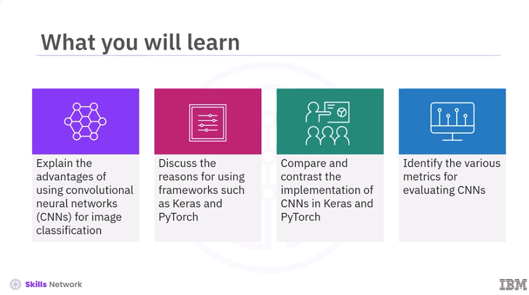
Welcome to Building a CNN Classifier. After watching this video, you'll be able to explain the advantages of using convolutional neural networks, CNNs, for image classification, discuss the reasons for using frameworks such as Keras and PyTorch, compare and contrast the implementation of CNNs in Keras and PyTorch, and identify the various metrics for evaluating CNNs.
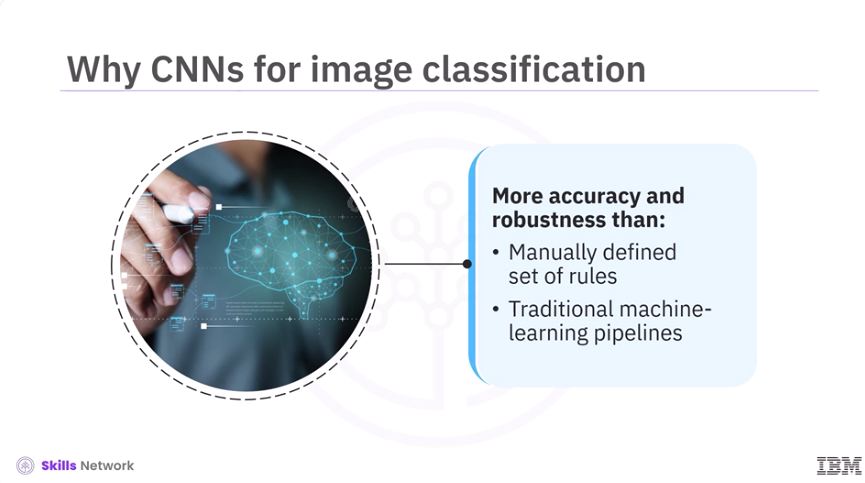
For image classification tasks, CNNs offer greater accuracy and robustness than any other manually defined set of rules or traditional machine learning pipelines.
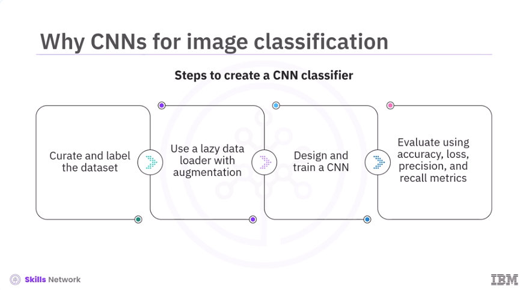
To create a CNN classifier, first, curate and label the dataset. Then use a lazy data loader with on-the-fly augmentation. Next, design and train a CNN. And finally, evaluate with accuracy, loss, precision, and recall metrics.
!Images/Building_a_CNN_Classifier/Building_a_CNN_Classifier_4.png(Images/Building_a_CNN_Classifier/Building_a_CNN_Classifier_4.png)
The most widely used framework for implementing CNNs are Keras and PyTorch. These frameworks take care of the low-level tensor operations, gradient calculations, and graphic processing unit GPU management. This allows you to focus on architecture and experimentation instead of writing the back propagation mathematics. Secondly, they embed decades of optimization research that would be difficult to replicate in custom code. This includes efficient GPU kernels, automatic differentiation, mixed-precision arithmetic, and distributed training routines.
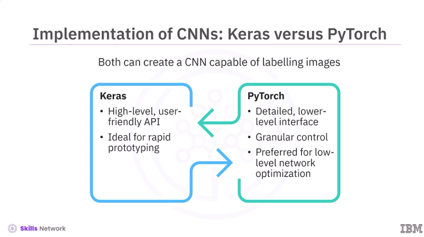
Let's dive into the implementation of CNNs using Keras and PyTorch. While both Keras and PyTorch can create a CNN capable of labeling images, their implementation differs. Keras is a high-level, user-friendly Application Programming Interface API that targets rapid prototyping with minimal boilerplate code. PyTorch, on the other hand, offers a more detailed, lower-level interface and provides granular control over every gradient step. PyTorch is popular for low-level network optimization.
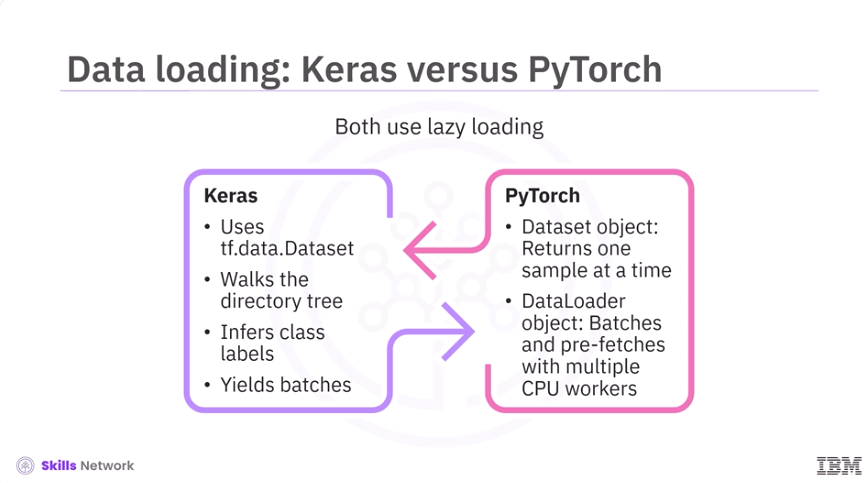
Now let's discuss data loading in Keras and PyTorch. Both Keras and PyTorch use a lazy loading strategy for data loading. Keras uses the tf.data.dataset subsystem, where a helper routine walks the directory tree, infers class labels, and yields batches as needed. Whereas PyTorch implements a two-piece design – a dataset object that returns one sample at a time, and a dataloader object that batches those samples and uses multiple Central Processing Unit CPU workers to prefetch upcoming batches.
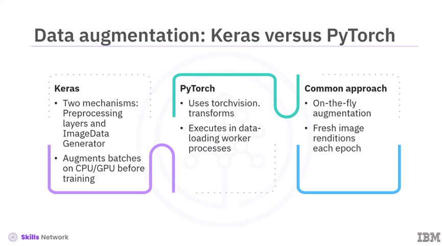
Next, let's discuss data augmentation in Keras and PyTorch. Keras offers two mechanisms for data augmentation. First is the preprocessing of layers that can be chained into a small sequential block, and second, the image data generator utility. Each batch is augmented on the CPU, or even the GPU, before reaching the training loop. On the other hand, PyTorch uses the torchvision.transforms module, where these transformations are declared in a functional list that executes inside each data loading worker process. However, in both Keras and PyTorch, augmentation happens on the fly, meaning you never store augmented copies on disks, and the model sees a fresh rendition of each image during every epoch.
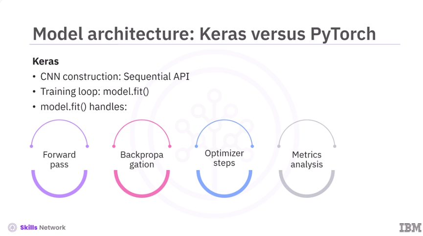
Once the data pipeline is in place, the next step is to design the model architecture. Keras streamlines the construction of a CNN using the sequential API, and it manages the entire training loop via the model.fit method. This method contains key operations such as the forward pass, back propagation, optimizer steps, and metrics analysis.
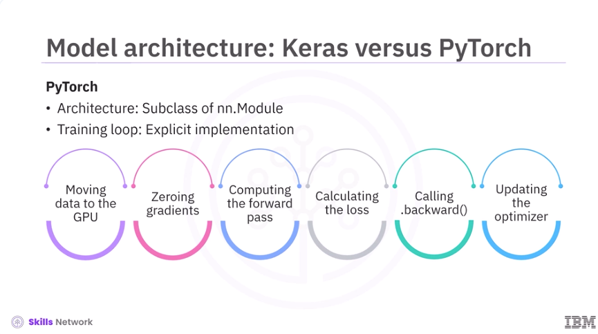
In PyTorch, a similar architecture is defined as a subclass of nn.module. The training loop must be implemented explicitly. This includes moving data to the GPU, zeroing gradients, computing the forward pass, calculating the loss, calling .backward, and updating the optimizer.
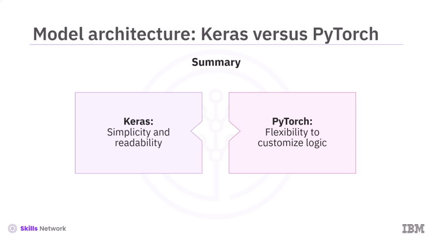
While Keras excels in simplicity and readability, PyTorch provides greater flexibility to customize logic directly into the training loop.
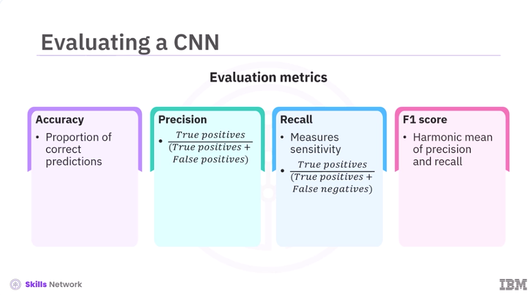
After data loading, data augmentation, model building, and training, the next step is evaluation. Let's dive into the various metrics to evaluate a CNN. First is accuracy. Accuracy is the proportion of correct predictions across all classes, but it can be misleading on skewed datasets. Next is precision, the ratio of true positives to true positives plus false positives. It answers the question, of all positive predictions, how many were correct? Precision is crucial when false positives incur logistical costs. Then comes recall, measuring sensitivity. It is the ratio of true positives to true positives plus false negatives. It answers the question, how many were correctly identified? Recall is important when the absence of a specific class can impact projections. Further, F1 score is the harmonic mean of precision and recall, providing a single value that balances both errors.
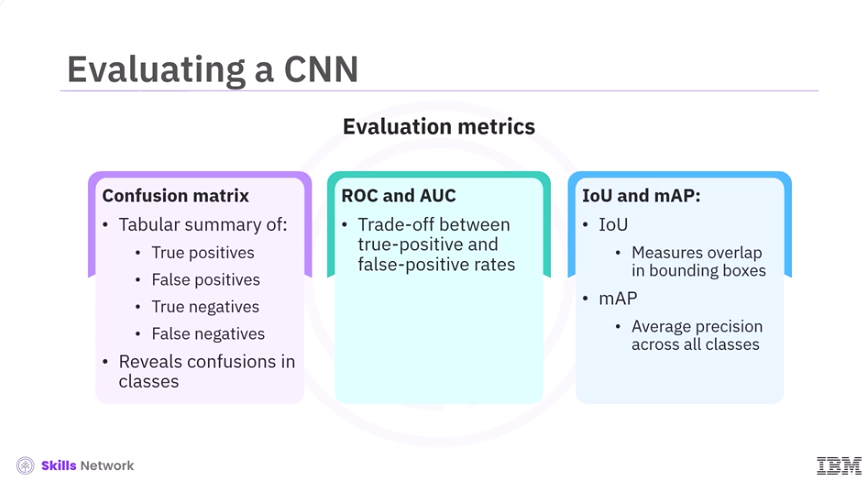
Next, a confusion matrix is a tabular summary of true positives, false positives, true negatives, and false negatives. It quickly reveals if the model systematically confuses different classes. Metrics such as the Receiver Operating Characteristic, ROC curve, and the Area Under the Curve, AUC, summarize the tradeoff between true positive and false positive rates across all possible cutoffs. Metrics such as Intersection Over Union, IoU, and Mean Average Precision, mAP, are used for object detection or segmentation. IoU measures the overlap between predicted and ground truth bounding boxes, and mAP is a metric that measures the average precision across all classes in tasks like object detection.
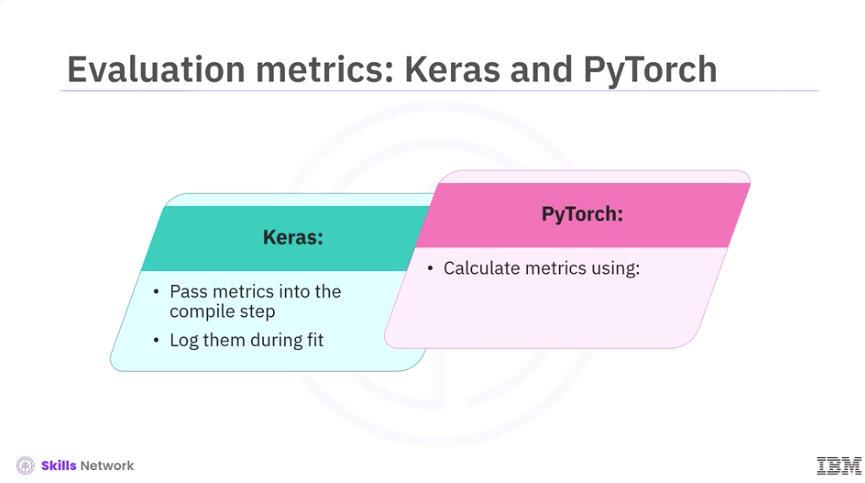
Keras allows metrics to be passed into the compile step, logging them during fit. For PyTorch, you calculate metrics using Scikit-learn or Torch metrics.
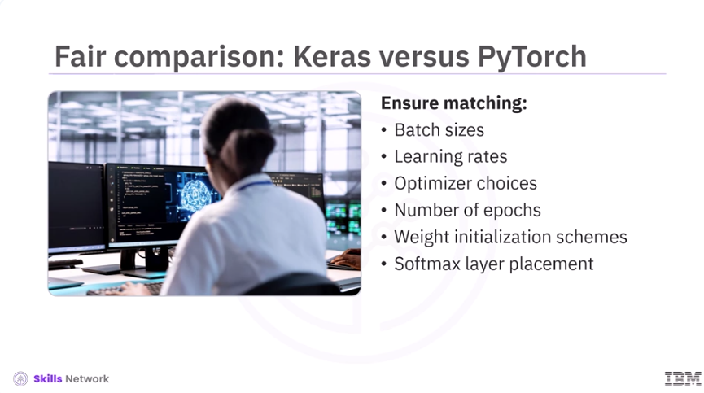
To compare CNNs trained in Keras versus PyTorch, you need to have similar batch sizes, learning rates, optimizer choices, and number of epochs. Weight initialization schemes and the placement of a softmax layer must also match.
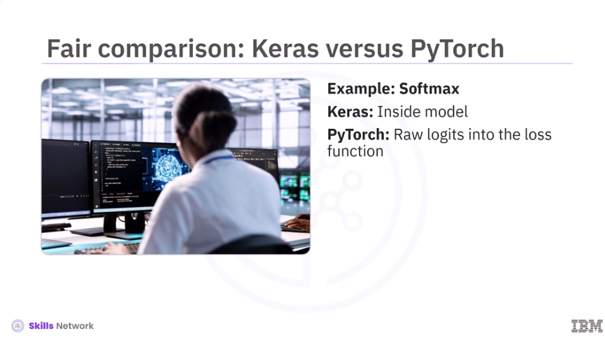
For example, Keras typically includes softmax inside the model, whereas PyTorch omits it and feeds raw logits into the loss function.
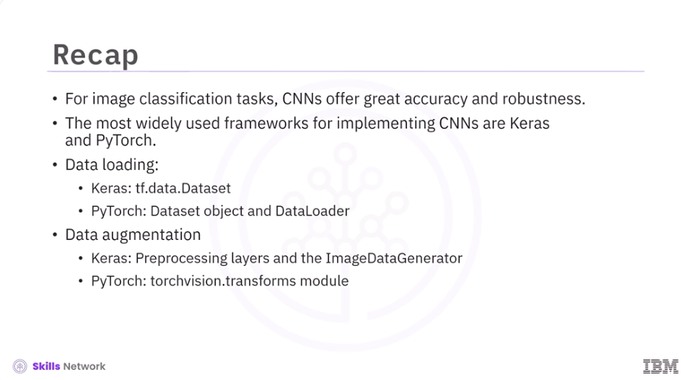
In this video, you learned, for image classification tasks, Convolutional Neural Networks, CNNs, offer great accuracy and robustness. The most widely used frameworks for implementing CNN are Keras and PyTorch. For data loading, Keras uses the tf.data.dataset subsystem, while PyTorch uses a dataset object and data loader. For data augmentation, Keras offers preprocessing layers and the image data generator, while PyTorch uses the TorchVision.transforms module.
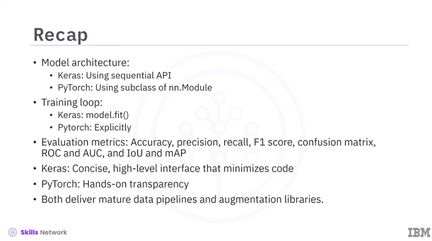
In Keras, the model architecture is constructed using sequential API. In PyTorch, the architecture is defined as a subclass of nn.module. In Keras, the training loop is managed via the model.fit method. In PyTorch, the training loop is implemented explicitly. Metrics used to evaluate CNNs are Accuracy, Precision, Recall, F1-score, Confusion Matrix, ROC and AUC, and IoU and mAP. While Keras offers a concise, high-level interface that minimizes code, making it perfect for rapid prototyping, PyTorch provides hands-on transparency that empowers customized research and in-depth debug tools. Both deliver mature data pipelines and augmentation libraries, and are chosen based on your personal preference.